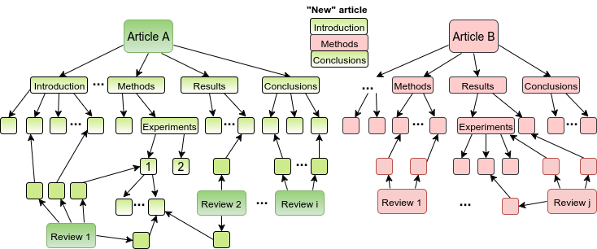

Linkflows bi-monthly Meeting
3rd May 2018
These slides: add link!
Project updates
- DC paper accepted@ESWC'18, 3-7 June
- Poster accepted@ACM WebSci'18, 27-30 May
- Accepted@International Semantic Web Research Summer School, 1-7 July
- SIKS course Knowledge Representation and Reasoning, 9-10 April
- Lorentz workshop on Online Information Quality: Linkflows presentation, 26-29 March
- ICT.OPEN: Linkflows presentation, 19-20 March
ACM WebSci'18 abstract
DC Paper
- Current version: Overleaf, PDF
- @ESWC'18 in Greece, mentor: Lyndon Nixon
- Timeline:
Revised version of paper to mentor: April 25- Mentor’s feedback on paper: May 2
- Camera-Ready Paper: May 10
- Draft presentation to mentor: May 16
- Mentor’s feedback on presentation: May 23
- Conference: 3-7 June
RECAP: Why Linkflows?
- Scientific publishing: effective means to share information and knowledge
- Shift towards the digital environment
- New ways to represent fine-grained knowledge
- Linked Data: enable the exchange, reuse and linking of data on the Web
RECAP: Challenges
- Reproducibility
- "Knowledge Burying"
- Digital publishing
- Quality assessment
- Decentralization of content
Challenges: Reproducibility

Challenges: "Knowledge Burying"

|
More than 40% of information lost from publishing to mining RIP (Rest in Paper) knowledge Need to preserve information about the processes |
Challenges: Digital Publishing
- Semantic Web, Linked Data
- Understandable content for both humans and machines
- Digital artifacts: text, datasets, code, figures, slides, spreadsheets, multimedia objects, methods, protocols, results and reviews, annotations, etc.
- Scientific workflows: how digital artifacts are consumed and produced
Challenges: Digital Publishing
- Semantic Web, Linked Data
 SPAR ontologies: Semantic Publishing and Referencing Ontologies
Challenges: Digital Publishing
- Semantic Web, Linked Data

Fine-grained interconnected parts of knowledge; e.g. nanopublications
Challenges: Quality assessment

Challenges: Quality assessment
- We need a new way of assessing the quality of scientific publications
- Debatable and bias-able indicators; e.g. Journal Impact Factor
Challenges: Decentralization

|
Editors are from Mars,Referees are from Venus, andAuthors are from Earth. Reviewing:
No control of a central authority anymore; e.g. publishing house Decentralization of content; e.g. academic peer-to-peer networks |
In conclusion...
A new way of publishing!!!
- Consider:
- Semantic Web, Linked Data technologies
- Decentralization
- Quality assessment
Focus
How can scientific workflows that produce and consume digital artifacts be assessed, linked and decentrally executed across platforms, such that individual steps of a single workflow can be distributed?Approach
- Develop a simple model for linked workflows → linkflows
- Choose sample articles from IOS Press and Netherlands Sound and Vision
- Instantiate model with sample articles
- Use Linked Data Notifications (LDNs) for decentralized execution
Model sample paper
Ontologies used
- PROV-O: Provenance Ontology
- SPAR suite: OWL 2 DL ontologies for the publishing domain
- FAIR*reviews ontology
- Web Annotation Data Model
Model schema
ADD IMAGE HERE!, the networked structure of the sample articleModel schema
ADD IMAGE HERE!, zoom in on how the article structure is represented in RDFModel schema
ADD IMAGE HERE!, zoom in on how connections between references and article parts are represented in RDFModel schema
ADD IMAGE HERE!, zoom in on how connections between references and article parts are represented in RDFModel schema
ADD IMAGE HERE!, zoom in on how connections between different versions of article parts are represented in RDFLinkflows model for sample paper
| Version 1 | Version 2 | Camera-ready | Total | ||||||
|---|---|---|---|---|---|---|---|---|---|
| #nodes | 109 | 174 | 175 | 284 | |||||
| #links | 221 | 219 | 245 | 685 | |||||
| #inter-node links | 150 | 233 | 235 | 618 | |||||
| #external links | 30 | 47 | 47 | 69 | |||||
| #reviewing links | 57 | 20 | 3 | 80 | |||||
Future work
- Use Linked Data Notifications (LDNs) for decentralized peer-review
- Model more papers both from IOS Press and Netherlands Sound and Vision
- New measure for quality assessment; e.g. network analysis
Future work:
Reviewing workflow using LDNs

|
|
Take-home message
- Represent scientific knowledge as nodes in a network
- Approach compatible with "traditional" PDFs, SPAR-represented articles, nanopublications, etc.
- Decentralized peer-review process